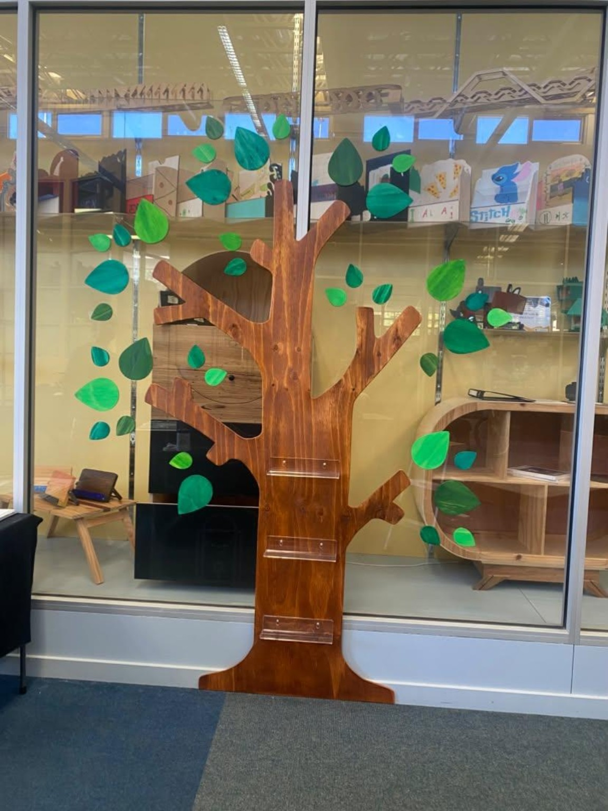

Mosaic Stories
Vibrant tilework that brings animals, colour, and texture together in one playful composition.
A COLLECTION OF HANDMADE THINGS
Handmade clocks, mosaic stories, and objects shaped by imagination.
Explore the collection
01 / Mosaic storiesA FEW THINGS MADE WITH CARE
Every piece begins with a material, a little curiosity, and room to experiment.
Vibrant tilework that brings animals, colour, and texture together in one playful composition.
Decorative clocks where botanical motifs and colour turn a daily object into a statement piece.
A tree-shaped wooden display celebrating organic shapes and the quiet beauty of the natural world.
A bold exploration of layered shapes and expressive colour, made by hand.
A floral clock with a vivid teal ground and a flower built from contrasting layers.
MEET THE MAKER
Material Muse is the creative portfolio of Monika Starczowski, bringing together handmade clocks, mosaic artwork, and explorations in form, colour, and texture.
From natural wood to colourful tiles, each piece is an opportunity to experiment, discover a new combination, and make something that feels distinctly its own.
Say helloLET'S CONNECT
For collaborations, artwork enquiries, or just to share a little creative inspiration, Monika would love to hear from you.
Email Monika Find on Instagram ↗Remember to add Monika's actual email address and Instagram profile before launch.